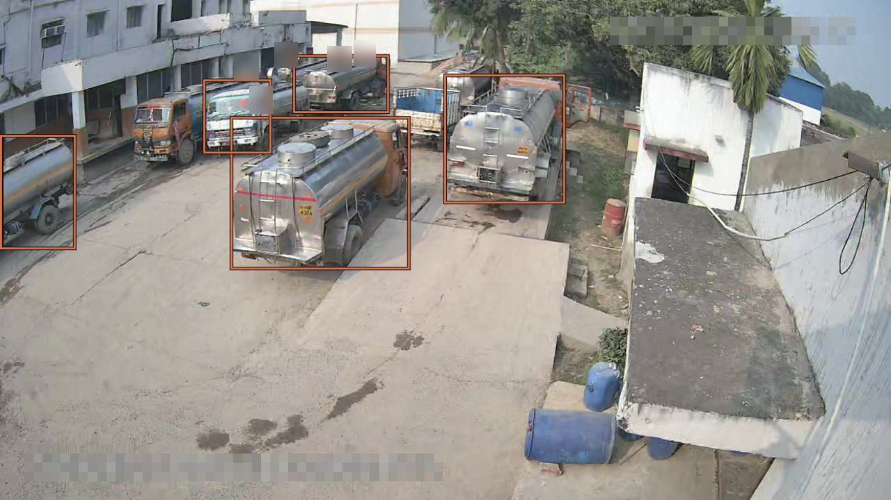
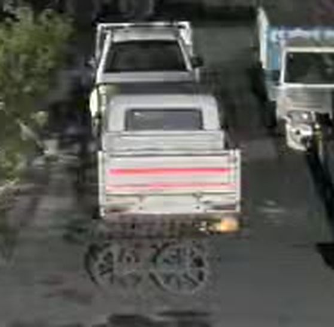
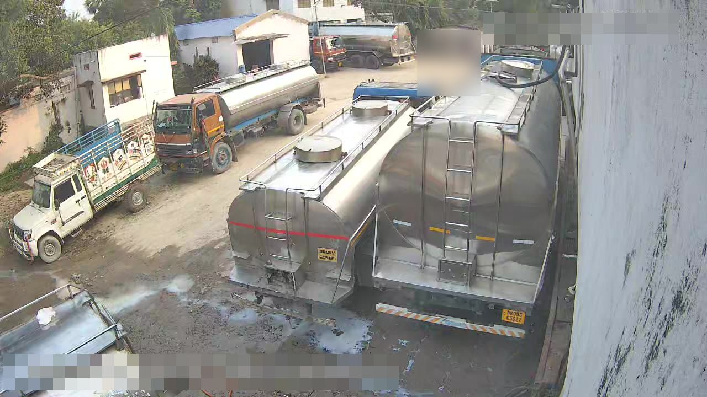
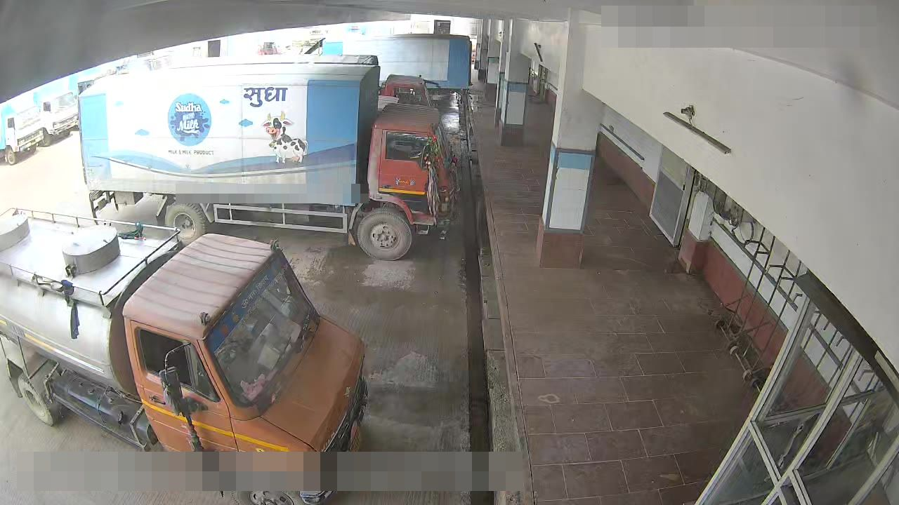
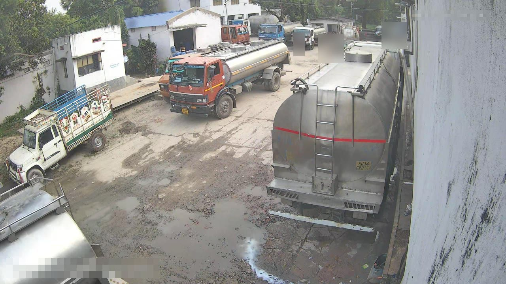
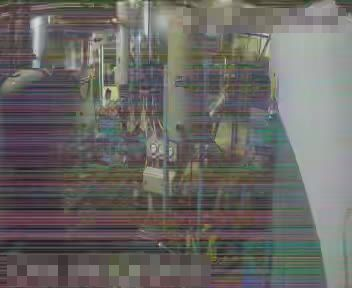

Editing an object detector without training: five logits into one, rows fitted in closed form, a cut-off per camera
Abhinav Gautam · 7 November 2026
A small single-stage object detector, exported end to end as one file and running on the cameras of a video management system, could not be retrained. We edited its weights and its graph instead: a noisy-OR merge of its five vehicle logits after the sigmoid; new class rows fitted in closed form over its head features and over a frozen image-embedding space; and a dedup and nesting stage baked in as graph nodes after the top-300. We also tried damping the vehicle logit along a fitted direction, a form of activation steering, and set the score cut-off per camera. Every edit was measured on the site's own stored frames, before and after, and only what measured well shipped.
Summary of results
- Merging the five vehicle logits into one score with seven nodes after the sigmoid adds 20 vehicle boxes on 230 frames, 18 of them real, with 0 lost and the people counts unchanged (section 1).
- A decision layer on the 300 output rows, with hysteresis, a two-sighting start and a 1.5 s hold, cuts count blips on a quiet camera from 55 to 6 in ten minutes; a nested rule stops one truck being counted as three (section 2). The same rules as graph nodes match the Python pipeline on 12,770 frames box for box.
- A per-camera vehicle cut-off of 0.12, on for twelve yard cameras with hand-drawn ignore zones, finds parked trucks at a precision of 0.85 on a 404-frame rerun, 323 real objects against 40 false (section 3).
- Steering the vehicle logit does not replace the zones: damping it along a fitted direction removes at best 4 of 48 false objects on 999 frames while losing real trucks, and the variants that remove 24 to 36 lose 71 to 158 of the 323 real ones; the zones remove 8 of 11 and lose none (section 3).
- Tiling the frame into four quarters for people only finds about 70 more real people on 230 frames for five passes (section 4).
- A brand row fitted in closed form over the detector's head features reaches 0.81 to 0.83 held out by site, under the 0.9 target, and is rejected; the same fit in a frozen image-embedding space reaches 0.875 held out and is shipped, about 26 of the top 29 right in the live check (section 5).
- A fire row with no base class sees 0.27 of held-out fire pictures at zero alarms on 367 site frames and is parked (section 6). A spill row fitted on one event finds 0.915 of its second half with 2 alarms on 412 unseen frames, and waits for a second event (section 7).
- A 512 px input is a third faster and loses 8 % of people and 20 % of vehicles; INT8 dynamic quantisation is slower, 207 ms against 111, at 60 % count agreement. Both rejected (section 8).
- Camera health from image statistics, no model, flagged fog right on 18 of 23 frames, colour bands on 4 of 4 and black on 1 of 1 over 1,776 frames of 119 cameras on its first night (section 9).
- The browser detector's WASM and WebGPU benchmark is still running; its table is pending (section 10).
Setup
The cameras belong to a dairy: 95 of them over weighing bridges, raw milk reception bays, loading docks, truck yards and gates, all feeding one video management system. The system stores one frame an hour per camera, the counted peaks at one per 15 minutes, and short clips at the busy moments, and it counts the people and vehicles in those frames with the detector. The original model and the edited model are the same file before and after the edits described here; nothing in either was trained.
The product keeps people at a score of 0.35 or more and vehicles at 0.28 or more, with a minimum area and a cross-class dedup at IoU 0.7. A harness runs the exported file exactly as the product does, on the stored frames, and every before and after in this post comes from it. The first section checks that the harness reproduces the product's counts; the sections after it take the problems one at a time, each with what was seen, what was changed, and what the frames said. The terms the sections lean on are collected beside the text.

The original model draws four boxes on this frame. It has no box on the orange-cab tanker in the middle of the yard, where its score is 0.27, a hair under the cut-off. It has none on the small tanker beside the truck at the left, which scores 0.18, and none on the vehicle at the far end of the yard, at 0.12. The edited model in yard mode draws seven, one box per vehicle. The three it adds are the small tanker at 0.31, the middle tanker at 0.27 and the far vehicle at 0.19. The nested rule had nothing to drop on this frame.
Neither panel has a box on the blue open-body truck parked between the middle tanker and the one at the right, of which only the body shows. Seven of the eight vehicles, not all of them, and that is the shape of the whole post: each change is measured, adopted where it earns it, and the misses are written down. The three kinds of change are indexed below, and the terms the sections lean on are collected beside the text.
Where the counts stood before any change
Before anything was edited, the first job was to pin down how the product's counts behaved, and whether a harness of my own reproduced them. It did on 82 % of frames. The 18 % it did not were boxes within a few hundredths of the cut-off, which said where the first gains would have to come from.
The model is a small single-stage detector, exported end to end. It takes a 640×640 letterbox on grey 114, planar RGB in [0,1], and gives one output output0 of shape [1,300,6]: x1, y1, x2, y2, score and class for each of 300 boxes. The product keeps class 0, people, at a score of 0.35 or more, and the five vehicle classes (1, 2, 3, 5 and 7) at 0.28 or more, with a minimum area and a cross-class dedup at IoU 0.7. The harness runs the file exactly so.
The protocol was 230 of the product's own stored frames from 117 cameras. The product's boxes were set against the harness's boxes, and a frame counted as agreeing when both counts matched.
The 18 % that disagreed were boxes at 0.28 to 0.40 flipping across the threshold on decode differences between the two paths. Nothing in the body of the network was at fault. So the first gains had to come from the last layer, and from what is done with its output.
Trucks seen from behind were missed
A truck parked with its back to the camera was often not counted. In frame 45 at Site 2 a pickup stood rear-on in the yard and the product drew nothing on it. Merging the five vehicle classes into one score, with seven nodes added after the last layer, put a box on it and nineteen more across the 230 baseline frames, eighteen of them real by eye, with none lost and the people counts unchanged.
The model does this because it was trained to tell car from truck from bus, and a rear view carries little of what separates them. Its evidence spreads over several of those classes instead of landing on one. The pickup scored 0.26 as truck and 0.03 as car. The product takes the best class, 0.26, against a cut-off of 0.28, and so it draws nothing. The vote is split, not absent.

/model.23/Sigmoid_output_0. The toggle shows the original model, the edited model, and yard mode on the same frame.The bars are the scores at anchor 7022, the one the edited model reported the box from, and the one score they become. The original model has no box here at 0.28; the edited model has one at 0.28 exactly. The vehicle in front of the pickup scores 0.12 with the original model and 0.22 with the edited one, under the product's cut-off either way, so it appears only under yard mode, the third setting of the toggle.
Where the scores come from
At each pyramid level the class logits come from a 1×1 convolution, model.23.one2one_cv3.{l}.2, with weight [80,128,1,1]. Reshape_3..5 and Concat_1 lay the three levels out as [1,80,8400], and /model.23/Sigmoid turns the logits into scores. Concat_3 joins them to the decoded boxes. Then Transpose → Split [4,80] → ReduceMax → TopK(300) → GatherElements → TopK keeps the 300 anchors with the largest best-class score. That ReduceMax is where the split vote is lost.
The fix: one vehicle score from five rows
The edit replaces the truck row with the chance that the anchor is a vehicle of any of the five kinds, and zeroes the other four rows.
p7 := 1 − ∏c ∈ {1,2,3,5,7} (1 − pc), p1, p2, p3, p5 := 0
Seven nodes go in directly after the sigmoid. surgery/Gather takes the five rows by surgery/vehicle_idx. Sub, ReduceProd over axis 1 and a second Sub give 1 − ∏(1 − p). MulInto places that on row 7 through the one-hot initializer surgery/into_mask. MulKeep multiplies the original tensor by surgery/keep_mask, which is zero on the five rows, and Add joins the two. Every consumer of the sigmoid is re-pointed to the result, so the top-300 ranks anchors by the merged score. Nothing else changes, and the output contract holds.
A noisy-OR rather than a max, because a max cannot raise any score, and three weak votes for classes that are near-independent on a truck rear should add up. The other four rows are zeroed rather than left, because the product drops a vehicle box that overlaps a vehicle of another class at IoU above 0.7, and with those rows at zero no such pair exists.
Measured
The edited file was run on the 230 baseline frames, then on 346 daylight yard frames from four sites. Every new box was judged by eye from a crop sheet.
Vehicle boxes on the 230 frames went from 233 to 254. None were lost, the people counts did not change, and latency did not move. Eighteen of the twenty new boxes were real by eye; the two doubtful ones were a sliver at Site 3 and a wall at Site 1. On the yard frames the merge gained 17 distinct vehicles, 16 of them real. Adopted, and this is the file the product fetches.
What it does not fix is a vehicle whose evidence is weak on every row. The vehicle in front of the pickup in Figure 2 still scores 0.22, under the cut-off, and that is the problem the yard cut-off takes up below.
Counts that flickered, and one truck counted three times
On a quiet camera at Site 4 the people count changed 15.9 times a minute, and 55 times in ten minutes it jumped away and back within a second. The product counted boxes per frame, so every box that crossed the cut-off one way and then the other changed the count. A decision layer that turns boxes into tracks, with hysteresis and a short hold, brought that to 6.9 changes a minute and 6 blips, with no ground truth needed to see it. A second rule, for boxes nested inside other boxes, stopped one truck being counted as three.
The flicker is in the scores, not the scene. A person who does not move still gets a different score on each frame as the compression noise changes, and a score that hovers near 0.35 crosses it often. A count made of single frames has no memory, so it follows every crossing.
The fix: tracks with hysteresis and a hold
The decision layer turns a camera's per-frame boxes into tracks. A track is born from a box at the product threshold, enter. It is kept by boxes down to keep = 0.20, counted only after min_hits = 2 sightings, and held for hold_s = 1.5 s after the last one. Boxes are associated to tracks greedily by IoU within a kind, at 0.3. Before association, same-kind duplicates are dropped at dedup_iou.
The dedup thresholds come from the data. On the quiet camera, 46 of 55 overlapping person pairs at IoU of 0.9 or more were one person boxed twice. On a crowded bay, pairs at 0.5 to 0.85 were different people sitting together. Nested boxes of one truck overlapped down to about 0.8. So the threshold is 0.9 for people and 0.7 for vehicles. At 0.7 for people the quiet camera gave 5.8 changes a minute and 7 blips; at 0.9 it gave 6.9 and 6, and the busy bay kept its real neighbours, which is the trade worth making.
Measured
The measurement is two ten-minute daytime clips at 2 fps, with no ground truth, by two flicker measures: changes per minute of the count, and blips, excursions that return within one second. Figure 4 replays the quiet camera with both counts side by side.
The table has the same two measures for the quiet camera and for a busy loading bay with up to thirteen people in view.
| People count, 10 min at 2 fps | Changes/min raw | decided | Blips raw | decided |
|---|---|---|---|---|
| Quiet camera, Site 4 ch5 | 15.9 | 6.9 | 55 | 6 |
| Busy loading bay, Site 5 ch4, up to 13 people | 46.2 | 30.0 | 132 | 56 |
Count flicker on two ten-minute clips, raw per-frame count against the decision layer.
The busy bay still flickers at 30 changes a minute. The layer does not fix a bay where people really do come and go every few seconds; it only removes the changes the scene did not make.
One truck boxed three times: the nested rule
The merged model boxes a tanker and also its cab, or draws a group box round a tanker and the van beside it, and each extra box was a vehicle in the count. The nested rule drops the boxes that are parts or groups of other boxes. With contained(a, b) the fraction of a's area inside b, a box b is dropped in two cases.
part: contained(b, s) ≥ 0.8 for some stronger s
group: ≥ 2 members m with contained(m, b) ≥ 0.8, pairwise apart, all stronger than b or each ≥ 0.15 of b's area
A part inside a group box is not a part, since the group box is the one that goes. On the yard clips the rule fixed 118 wrong frames and left about 52. The ones left are mostly cab and rear boxes that are under 80 % inside anything, which the rule cannot tell from two vehicles close together. Figure 5 lets you try the three cases.
The same rules as nodes in the graph
Dedup and the nested rule are code today, copied into the server, the browser and the SDK, which is three places for one rule to drift. So the same two rules were also built as a stage in the graph, after the top-300, and checked box for box against the Python version on 12,770 frames. It is built and not yet deployed.
bake_postprocess appends the stage on the [1,300,6] rows. Split separates boxes, score and class. Pairwise intersections over [300,300] come from broadcast Min, Max, Sub and Mul, and containment is intersection over area. Kind masks come from Equal and Or. A row is inside another when containment is 0.8 or more, both are vehicles, and it is off the diagonal. The group test is a MatMul of the member mask with the apart mask, then ReduceMax above 0.5. A part is a row inside a stronger non-group row. A Where zeroes the dropped scores.
Then NonMaxSuppression runs per kind on the survivors, at 0.9 for people and 0.7 for vehicles, because greedy NMS is a recurrence and not a pairwise test. output0 stays [1,300,6], and a dropped row keeps its place with score 0, so the contract holds. Opset stays 12.
On the 12,770 frames, 6,938 stored frames and 5,832 daylight clip frames, 0 frames differ from the Python pipeline box for box. The stage costs 1 ms per frame single-threaded, 1.5 ms on its own, and is within noise at four threads.
Parked trucks in the yards scored under the cut-off
With the merge in, the yards still missed trucks. Box-truck rears and sides, pickups and a milk van sat at scores of 0.10 to 0.28, under the product's single cut-off of 0.28. On 346 yard frames that band held 811 boxes, 72 distinct objects, about 60 of them real against about 6 false. Lowering the cut-off per camera, on the twelve cameras where that band is mostly trucks, and fencing the fixed objects with ignore zones, finds those trucks at a precision of 0.85 over a 404-frame rerun.
The model is not wrong about these trucks, only unsure. A truck half hidden by another, or seen side-on across a yard, gets a score the product's one threshold throws away. The same band on a camera that looks at a wall or a crate stack is mostly noise, which is why the cut-off cannot simply be lowered everywhere.
The fix: a cut-off per camera
The fix is not a weight but the product's threshold. Yard mode is a per-camera setting: vehicle.enter = 0.12 with the nested rule, keep = 0.08, and hold_s = 30 so a parked truck is not lost when its score dips for a frame.
Which cameras get it was decided from the frames. The protocol was 436 daylight frames, 07:00 to 17:00 device time on 5 November, over 104 cameras, with the edited model at vehicle_t = 0.10 and the nested rule. Boxes at 0.10 ≤ score < 0.28 were collapsed per camera at IoU above 0.6 across frames into distinct objects. Every camera with three or more distinct gained objects was judged by eye from crop sheets: each object real, a second box on a counted vehicle, or not a vehicle. Yard mode goes on where precision is 0.75 or more and at least three objects are real.
Band precision over the 31 judged cameras was 0.61, 124 real of 203; on the true yards it ran from 0.75 to 0.92. What dragged it down was fixed objects: the same window or crate stack re-found on every frame.
Ignore zones round the fixed offenders
Eight ignore zones in sites/zones.json, as normalised x, y, w and h, were drawn only round fixed offenders: a window above a bay, crate stacks, a hose on a bay floor, and wall and floor slivers at the frame edge. A vehicle box centred inside one never counts. None was drawn where trucks park, and one candidate at Site 9 ch8 was dropped because the object sits beside a parked pickup. On the 14 candidate cameras the zones took false distinct objects from 11 to 3.
A rerun with 12 to 46 frames per camera, 404 frames in all, gave a precision of 0.85, 323 real against 40 false. It moved two verdicts off, Site 10 ch5 and Site 11 ch1, and one on, Site 1 ch4. Figure 6 has the per-camera picture, and the fold-out under it the full table.
Precision here is real gained objects over all gained objects in the band. False per day assumes ten looks an hour over ten daylight hours, and that every look re-finds a fixed offender, which is what a fixed offender does.
All 31 judged cameras
| Camera | Frames | Gained | Real | Dup | False | Precision, before → after zones | False/day, before → after | Rerun precision (frames) | Yard mode |
|---|

Three things that did not replace the zones
Zones are drawn by hand, so three automatic alternatives were tried in their place: steering the vehicle logit inside the model, a two-look rule on the gained boxes, and a check of each gained crop against text prompts. None did the job, and one found a smaller use.
Steering first. A direction was fitted on the head features of false and real gained objects, and the vehicle logit was damped along it, in the manner of activation steering, with the merged file otherwise unchanged. On 999 frames the mildest variants, damp-lda-K4 at f = 0.5 and 0.0, removed 0 and 4 of 48 false objects and lost real trucks on 5 and 7 of the 323 real ones. The variants that removed more, damp-contrib at K4 and K8, removed 24 to 36 of 48 and lost 71 to 158 of the 323 real objects. There is no setting that removes a false box without losing real trucks, because the false boxes are not a direction in the head features; they are particular objects on particular cameras, which is what a zone is. Rejected.
The second was a two-look rule, simulated on 699 clip frames of six cameras: a gained box counts only if a vehicle box of 0.10 or more in the frame ten seconds earlier matches it at IoU of 0.3 or more. It removed 80 of 319 false boxes and 238 of 1,398 real ones, and 10 of 23 false distinct objects against 54 of 129 real. A static offender is there ten seconds earlier too, so it survives. Rejected as a substitute for zones.
The third was the search model with text. Each crop's embedding is scored against a set of vehicle prompts and a set of non-vehicle prompts, among them crate stack, sign board, wall, window, hose, caption text and hand cart, by the softmax mass on the vehicle prompts. On the 182 judged boxes of the first day it separates real from false at an AUROC of 0.86, where the detector's own score manages 0.64. At a threshold that keeps 98 % of the real boxes it removes 12 of 58 false ones. On the 363-box rerun the AUROC falls to 0.78 and it removes 7 of 40.
Against the zones it loses. On the 14 yard cameras the prompts remove 2 to 5 of 11 false boxes and lose 1 to 3 real trucks; the zones remove 8 and lose none, and zones plus prompts add at most one removal. The one-day threshold keeps only 92 to 93 % of the rerun's real boxes. Below about 100 px, where most of the band sits, the crop says nothing to the model. Each crop costs 40 ms on the quantised tower on an idle CPU, so a frame with two to eight weak boxes costs 80 to 320 ms, two to four detector passes. Rejected as a per-frame gate.
It is kept for one offline job: ranking a new camera's gained clusters for a person to judge when drawing its zones. Its average precision for finding the false ones is 0.71 to 0.77, against 0.44 for the detector score.
People far from the camera were too small to find
A person at the far end of a yard is a handful of pixels tall once the frame is letterboxed to 640, and the detector does not see them. Running the detector again on the four quarters of the frame, so that each far-off person is twice the size, found about 70 more real people on the 230 baseline frames, at the cost of five passes instead of one. It is adopted on the server, where five passes are affordable.
The model does not fail here because of anything in its weights. A 640×640 letterbox of a 1280×720 frame halves everything, and the finest grid the head looks at has 8-pixel cells, so a person a dozen pixels tall covers one or two of them. Give the head a bigger picture of the same person and it finds them.
The fix: tiling
detect_tiled runs the full frame plus a 2×2 grid of crops with 15 % overlap, each letterboxed to 640, and merges the passes. Boxes from different passes that overlap at IoU of 0.5 or more, or that are 70 % contained in a kept box, are one box, and the higher score is kept. Tiles contribute people only. Their vehicles were fragments of trucks the full frame already had whole.
What it does not fix is the browser's live view, where five passes are too slow; there the full frame alone runs.
The dairy's own trucks looked like any other vehicle
The dairy's own trucks carry its brand, a blue-and-white paint scheme with the logo, and the dairy wanted them counted apart from everyone else's. The detector has no such class and cannot be taught one. What shipped is a prototype in the search model's space, one dot product on a vector the server already has, which tags branded box trucks: in the live check it tagged 391 of 857 vehicle crops, with about 26 of the top 29 right by eye. Held out by site it is right 0.875 of the time, and most of what it misses is at night or small.
The detector cannot do this on its own because its head was trained to separate truck from bus, not one paint from another, and the channels that fire on a blue cab fire on an orange one too. What still works is the premise that a brand is one direction in a frozen feature space, fitted in closed form from labelled crops and applied as one dot product. Two spaces were tried: the detector's own head features, and the search model's.
First try: a brand row in the detector's own features
The class-head feature at each level is the tensor that feeds model.23.one2one_cv3.{l}.2, 128 channels. The brand row is a second 1×1 Conv over it, surgery/Row{l} with weight [1,128,1,1], followed by an AveragePool, surgery/Pool{l}: 3×3 at stride 16, 7×7 at stride 32, pads w//2, count_include_pad 0. A single cell's feature was at chance; the pooled one was not, because a brand is the whole box, not one cell. The margin is concatenated to the 80 logits before each level's reshape, and Constant_3, Constant_16, Constant_19 and the Split widths move to 81.
The first version Sliced the truck logit out of the conv output and Added it to the margin. That can lift a weak fragment of a branded truck above the product's floor, and on one test frame it added fragment boxes. The version that stands is a relabel. The row is scaled by 20 so that after the sigmoid row 80 holds a gate, and ten nodes, surgery/Relabel*, split the vehicle score by it. No box can score more than the edited model gave it.
m = w · meanw×w(f) + b, g = σ(20 m), p80 := p7 g, p7 := p7 (1 − g)
The row is fitted per level by LDA with shrinkage on the pooled features of labelled crops, with b at the midpoint of the two class means and the whole scaled so a typical box sits a fixed margin from zero.
w = (C + λ tr(C)/128 · I)−1 (μbrand − μother), λ = 1
The labels are 319 daylight crops from 16 sites, 115 branded and 204 other. Infrared crops were excluded, and ten labels were corrected after error sheets. Figure 8 shows which of the 128 channels the fitted direction leans on.
The direction in Figure 8 was refitted on the 115 crops that score at that level. In the lower panel each cell is shaded by its contribution w·f, and the two margins are the sums.
Held out by site, the row reached 0.805 at stride 16 with the 3×3 window on 174 crops, and 0.826 at stride 32 with 7×7 on 115 crops, 0.81 to 0.83 overall. Mid-depth and neck features did no better. The errors are coloured-cab tankers tagged as branded, night crops, and slivers. The target was 0.9 or better held out, so the row is not deployed.
What shipped: a prototype in the search model's space
Every box the product stores is already embedded by the cutout search: the image tower of a CLIP ViT-B/32, 512 dimensions, unit length, on the crop padded square with the model's mean colour. The same LDA with λ = 1 on those embeddings gives a 512-d unit direction and an offset of −0.039, with the threshold at 0, fitted on all 319 crops with the quantised vision model and an 8 % box margin. That is the artefact the server loads. A tag costs one dot product on a vector it has anyway.

Site 7 ch7, in yard mode. The tanker's box is a vehicle and is not tagged: margin -0.10.

Site 1 ch4, 5 November, 13:00, in yard mode. The box truck in the dairy's brand (0.94) is tagged, margin +0.08; the tanker in front of it (0.89) is not, margin -0.08.
Both cameras run yard mode in the product, so that is the view each figure opens on, with the original model and the edited model at 0.28 on the toggle for comparison. At Site 7 ch7 yard mode boxes the trucks at the far end of the yard, which score 0.20 to 0.36 and are cut off at 0.28. At Site 1 ch4 the original and the edited model find the same two boxes at 0.28, and yard mode adds the truck at the left edge at 0.23 and the second blue box truck behind the tagged one at 0.21, partly hidden by it; both get a margin of +0.01, just over the line.
The prototype was scored held out by site in four variants, with the shipped one in the third row.
| Prototype, held out by site | Accuracy | False | Missed |
|---|---|---|---|
| fp32 vision model, tight box | 0.906 | 6 | 24 |
| fp32, daylight crops only (saturation ≥ 40, n 110) | 0.855 | ||
| quantised, 8 % margin (shipped) | 0.875 | 14 | 26 |
| CLIP + stride-16 head feature, level 2 only (n 115) | 0.974 | 0 | 3 |
Brand prototypes held out by site, on the 319 labelled crops.
Fifteen of the misses are night crops with saturation under 40. The combined row in the last line is better, but it needs the detector's feature taps at ingest, which the server does not output today. The live check after deployment tagged 391 of 857 vehicle crops, with about 26 of the top 29 right by eye. Adopted.
What it does not fix: held out, a clearly branded vehicle is still missed about a quarter of the time, mostly at night and on small crops. A refit for the tankers that carry only the logo is written up in docs/brand.md of the model repo and was not shipped. An unmarked tanker is by definition not brand, and is not tagged.
Fire and smoke were not among the classes
The dairy wanted a fire alarm from the same cameras, and the detector has no class for fire or smoke. A row for it was fitted in closed form, with no training, from two public picture sets, with the site's own frames as negatives. At the owner's rule of no false alarm on the site it sees about a quarter of the held-out fires. That is not enough to ship, so it is parked.
The detector's head features do carry something of flame and smoke, bright warm texture with soft edges, but nothing in the model was ever asked to separate that from a sodium lamp or a sunlit wall. A direction fitted from a few hundred pictures gets the large, plain fires and little else.
The fix tried: a row with no base class
It is the same row mechanism as the brand row, with no base class (on_top_of=None): class 80's logit is the pooled margin alone, so the row can create boxes of its own. The positives are the window-mean head feature at the centre of labelled fire and smoke boxes from two public picture sets, taken at the level whose stride fits the box, with a window of 5. The negatives are the pictures' non-fire cells and every step-th cell (3, 2 and 1 per level) of 353 of the site's own frames. The direction is the same LDA as the brand row.
cut = quantile1−10−4(w · fother), b = −cut, rowl = (s·w, s·b, 5)
The cut-off sits at the 1 − 10−4 quantile of the other cells because a frame has 8,400 of them, so even that rate is near one false cell per frame. Build B added hard negatives: all cells of night and infrared frames, with mean brightness under 90 or grey, plus bright warm cells, with window mean above 0.55 and R − B above 0.08. They were repeated three times in the fit and given their own cut-off above every one of them.
Measured
Three builds were scored on the two held-out picture sets, A and B, and on 367 of the site's own frames that the fit never saw.
| Build | Held-out images with fire found (set A / set B) | Unseen site frames with an alarm |
|---|---|---|
| A: levels 0, 1, 2, window 5, cut at 10−4 | 0.515 / 0.279 | 1 of 367 |
| B: A + hard negatives ×3 | 0.501 / 0.242 | 2 of 367 |
| C: level 2 only, cut above every site cell | 0.272 | 0 |
Three fire-row builds: the share of held-out fire pictures found, and alarms on 367 unseen site frames.
Hard negatives did not help. The one alarm on an unseen frame was a sodium lamp at Site 8 ch7, at 0.52. By eye the row lights up most of a large fire and misses small ones, and at the owner's rule of no false alarm on the site it sees a quarter of the held-out fires.
What it does not fix is the lamp. A flicker rule in the decision layer is meant to catch it, on the grounds that a lamp is static and a flame is not, but it has not been tested on real fire video.
alarm at frame t if a class-80 box is present on the last 5 frames (IoU ≥ 0.2 chain)
and (centre moved ≥ 0.25 of its size or width or height changed ≥ 0.25
or score ranged ≥ 0.15) # a lamp is static; a flame is not
The row is parked, not deployed.
A milk spill on a pad that nothing was watching for
From 14:05 to 14:28 on 4 November an opaque white stream ran from the tanker pad edge at Site 6 ch2 into the mud, and nothing in the system saw it. It was the one such event in five days of frames. A scanner that looks for pale, smooth, new regions on the floor was already running over every stored frame, and it did not score the spill; the event was found by eye on the scanner's review sheet. A spill row fitted on the first half of the event finds 0.915 of its second half with 2 alarms on 412 unseen frames. It has seen one spill, so it waits.
The detector has no class for liquid on a floor, and the scanner missed the stream for a plainer reason: at the scanner's 320-px working resolution the stream is two pixels wide, under the smallest blob it will count. What the scanner scored on that frame instead was the tanker's steel body, which no box masked because clip frames carry no detector boxes.

The scanner
The scanner uses no model. vmsdetect.spill runs per camera over every frame on disk, hourly frames and clip frames alike, at 320×180, and asks whether a pale, smooth, new region lies on the floor. It works in five steps.
- Background. The floor zone is the lower 67 % of the picture. From the camera's other frames (other hours and other clips, never the same clip, which shows the same puddle; at most 150 frames per camera, thinned evenly) take the 12 nearest in mean floor brightness. The background is their per-pixel median. So the lights coming on do not make the whole floor new.
- Gain. gain = mean(background floor) / mean(frame floor), clamped to 0.67 to 1.5; the frame is multiplied by it. An overcast afternoon against a sunny morning. On the spill frame it was 1.08.
- Masks. A pixel is a candidate when all of these hold.
bright: mean over RGB of gain·frame − background > 30.pale: mean > 120 and max − min < 40 (milk is grey, a crate is not).smooth: the largest luminance step in its 3×3 window < 18 (a liquid has no edges).new: pale in fewer than 30 % of the 12 background frames (a floor marking or a standing puddle is pale in most of them). Outside the detector's person and vehicle boxes grown by 8 % on each side, and in the floor zone. - Blobs. Connected components of the mask dilated by one pixel, so a thin stream is one blob and not a line of specks. A blob counts if it is 0.05 % to 12.5 % of the picture (29 to 7,200 px; bigger is a lighting change) and its ring, the 4-px band around it with at least 8 px in it, is at least 15 grey levels darker (a lit bare floor is pale everywhere and has no ring). Score = Σ min(blob, 288 px) / 57,600: a blob counts at most 0.5 % of the picture, so one sunlit slab does not outrank three puddles.
- Sheet. Frames sorted by score, one per camera per clip per 10 minutes, the top 24 on a contact sheet. A run over the frames of 4 November took about five minutes.
What it did on the spill frame is in Figure 11. The candidate mask, 1,017 px after the newness rule, is mostly the tanker's steel body at the lower left. Clip frames carry no detector boxes in the scanner, since the boxes come with the hourly frames' manifest, so nothing masked the tanker, and its 622-px blob with a ring contrast of 53 made the whole score, 0.0074. Inside the label box the stream left 5 px, under the 29-px minimum.
The frame was on five of the sheets, between 10th and 22nd of 24 at 0.007 to 0.013, because of the tanker, and the eye found the stream. The false positives on the sheets, in order of how often, were lamp-lit or sunlit bare floor and walls; white trucks, tankers and cans outside the boxes; white crates; shiny wet tiles; and milky wash water that never dries at one site.
The label box in Figure 11 holds 5 candidate pixels and no blob. That is the whole of the miss: the scanner's smallest blob is 29 px, and the stream never reached it.
The fix tried: a spill row on the event
The label is one box drawn by eye, at x 0.44, y 0.80, w 0.13, h 0.20 of the frame. It is the same box on all 142 frames of the event clip, one every 10 s, since the stream did not move, and the same box on the 150 frames of the 09:05 clip of the same camera, which show mud and concrete and no spill.
The features are the class head's 128-channel feature at the cell under the box centre, averaged over a window of cells, as for the brand and fire rows. Level 1, stride 16 on a 40×40 grid, takes a 5×5 window, which covers 160 px of the 1,280-px frame. Level 2, stride 32 on 20×20, takes 3×3, which covers 192 px. The search-model variant instead embeds a crop of the box grown by 30 % on each side.
The negatives are of three kinds. The first is the dry clip's box. The second is the dry frames' floor cells: every cell at level 2 and every second one at level 1, with its centre in the lower two-thirds and none within a window of the box. The third is the other cameras' floor cells, from their hourly frames and every eighth clip frame, split in two by a hash of the file path (SHA-1 under 0.5 goes to the fit), every second frame of each half.
At the time of the run that was about 420 frames in the fit and 412 held out, 99,360 level-2 cells. For the crop variant it was one random floor crop per dry frame and two per other-camera frame, 994 in the fit and 824 held out.
The fit is the same LDA as the brand and fire rows, on the first half of the event, 71 frames, the first half of the dry clip, 75, and the fit half of the other cameras.
d = (C + λ · tr(C)/n · I)−1 (μspill − μother), d ← d / ‖d‖, cut = maxother d · f
The cut-off is the owner's rule: above every negative the fit saw, 116,000 cells at level 2.
Measured
The test is the later 71 event frames, which give recall; the later 75 dry-box frames, which give dry alarms; and the 412 held-out frames of the other cameras, which give unseen alarms, a frame counting as an alarm when any floor cell crosses the cut.
| Row | Recall | Dry alarms | Unseen alarms |
|---|---|---|---|
| head level 2, window 3, λ = 10, negatives from the same and other cameras | 0.915 | 2 of 75 | 2 of 412 |
| head level 1, window 5, same negatives, λ = 1 | 0.014 | 0 of 75 | 3 of 412 |
| search-model embedding of the region crop, λ = 10 | 0.986 | 0 of 75 | 1 of 412 |
Three spill rows on the later half of the event, the later dry frames, and 412 unseen frames.
The crop embedding is best, but it has to be handed the region, and the scanner cannot hand it a 2-px stream. No variant separates the test sets cleanly. In each, the lowest-scoring later spill frame sits below the highest-scoring negative, by a margin of −3.4 for the level-2 head row and −0.06 for the crop row.
What it does not fix is the shortage of evidence. It is one event: one camera, one pad, one overcast afternoon, held out by time only. To trust the row would take spills on other pads and at night, dry negatives across days with washing water, sky in puddles and residue, a fit held out by camera, and a scanner that can find a 2-px stream at full resolution. The scanner keeps running; the row waits.
The detector was slow on the CPU, and the two usual fixes cost too much
Every pass costs CPU time on the server, and the browser's live view feels it more. The two usual ways to buy speed without training, a smaller input and INT8 weights, were both tried on the same frames against fp32 at 640. Both were rejected: 512 px lost 8 % of the people and 20 % of the vehicles for a third less time, and INT8 was slower and agreed with the reference on only 60 % of frames.
A smaller input shrinks everything, and the far-off people and the half-hidden trucks that the earlier sections worked to find are the first to go. Dynamic quantisation of the whole file was slower, not faster, on this CPU, and it changed enough boxes near the cut-off to lose the count agreement the rest of the work depends on.
What was changed
resize_input(s) sets the input to s×s and rewrites the attention blocks' baked reshapes: a [1,4,128,400] constant becomes [1,4,128,(s/32)²], and a […,20,20] one becomes s/32. It regenerates the anchor grids /model.23/Constant_12 and Constant_13, which are [1,2,8400] with cell centres at +0.5 on the 80, 40 and 20 grids, and the stride vector Constant_14. The convolutions are size-free and need nothing.
INT8 was dynamic quantisation of the whole file.
Measured
Both variants were run on the same frames with fp32 at 640 as the reference.
| Variant | Size | CPU ms | Against fp32 at 640 | |
|---|---|---|---|---|
| 512 px | a third less | −8 % people, −20 % vehicles | rejected | |
| INT8 dynamic | 10 MB (was 38) | 207 (was 111) | 60 % count agreement | rejected |
Two speed variants against the fp32 model at 640 px.
What this does not fix is the browser, where the same file runs through a different runtime; that is the open benchmark below.
Cameras went foggy, banded or black, and nothing reported it
On the night of 4 November eight camera domes at Site 8 were smeared with haze, one channel had broken into coloured bands, another into streaks, and one frame was black. The detector counted on those pictures as if they were fine, and nothing told anyone the pictures were not. Camera health is now checked on every stored frame from a few image statistics, with no model. On the first night, 1,776 frames of 119 cameras, it flagged 23 fogged frames of which 18 were right by eye, 4 banded frames of 4, and 1 black frame of 1. It is adopted and runs in the product.
The detector has no notion of a bad picture. A fogged frame gives it fewer boxes, not an error, and a frame of coloured bands gives it none. The failures that matter here are the ones a person sees in a second, so the check is built from what a person sees: how much contrast there is, how sharp the edges are, whether the picture is striped, lit, or the same as an hour ago.
The statistics
Each frame is decoded at 320×180. The top and bottom 9 % of rows go, since they hold the recorder clock and the camera name, and the 320×148 body is reduced to a few numbers in numpy.
g = 0.299 R + 0.587 G + 0.114 B; its mean, std, p5, p95
sharp = var(4-neighbour Laplacian of g)
edge = log(1 + mean |Δx g| + |Δy g|) per 8×8 block
40 × 18 = 720 blocks
flat = blocks with std(g) < 4
detail = median over textured blocks (std > 6)
of std(Laplacian) / std(g)
≈ 1.8 on a sharp step, ≈ 0.7 on a 4-px ramp
the site's median is 1.75
aniso = mean |Δy g| / mean |Δx g|
the same on R − G and B − G
halo = share of glow pixels (120 < g ≤ 200)
within 4 px of a lit core (g > 200)
white = share of g > 235
uniform = share within ±6 of median(g)
sat = mean (max − min) / max over RGB, where max > 30
gray = g at every second pixel, 160 × 74, for frozen
On this CPU that is 3 ms to decode at draft size and 7 ms of arithmetic per frame, timed over 60 frames. The product runs a Go port of the same code and thresholds in its frame worker, right after each kept frame is stored: one frame an hour per camera plus the counted peaks, one per 15 minutes.
The reference
Several of the conditions compare a frame with the camera's own recent frames. The reference is the 10 usable frames nearest in time, where usable means not black, not one flat colour, and std of 6 or more. It never includes the frame itself or one within 60 s of it, and it needs at least 3 frames, or the reference checks stay silent. Nearest in time means a night frame is judged against night frames and a day frame against day. The reference holds the per-block median of the edge layout, and the median sharpness, detail and black level, p5.
The product also keeps a baseline per camera and slot, day being 07:00 to 17:00 and night the rest: the first week of usable frames, or ten frames the operator points at with a button. A camera moved a week ago agrees with its own recent frames, so moved and blocked are judged against the baseline too.
Nine conditions
The conditions are checked in the order of the table, each with a score in 0 to 1 and an evidence frame. A black frame is judged for nothing else, nor is a corrupt one; a fogged frame is not also blurred; a blocked one is not also moved. The last column is what the first night produced.
| Condition | Statistic | Reference | Threshold | First night |
|---|---|---|---|---|
| black | p95 and mean of g; or uniform (a recorder's no-video card) | none | p95 < 45 and mean < 28; or uniform ≥ 0.92 | 1 frame, right |
| corrupt | aniso; chroma aniso when the chroma gradient ≥ 0.5 | none | aniso outside 0.35 to 2.8: streaks; chroma aniso outside 0.5 to 2.0: colour bands | 4 frames on 2 cameras, all right |
| fogged | fog = 0.6·soft + 0.4·haze + 0.15·halo; soft = (1.25 − detail) / 0.55; haze = (p5 − 35) / 40 × (150 − (p95 − p5)) / 60; each term clipped to 0 to 1 | none | fog ≥ 0.50 on a frame with std ≥ 6 and p5 ≥ 25 | 23 frames on 11 cameras, 18 right |
| blocked | share of flat blocks; edge energy kept in them and kept elsewhere, against the reference | median edge layout | flat ≥ 40 %; the reference had ≥ half its mean edge energy there; kept there ≤ 0.35; kept elsewhere ≥ 0.5. Without a reference: flat ≥ 60 % and detail ≥ 1.25 | none (five earlier flags tuned away) |
| blurred | sharp / median sharp; detail / median detail | median sharp, detail, p5; layout correlation | < 0.35 and < 0.65; layout correlation ≥ 0.3; p5 lifted < 20 (more is fog) | none (one tuned away) |
| overexposed | white | none | ≥ 0.20 | none |
| moved | Pearson correlation of the edge layout with the reference; the best over shifts of up to 4 blocks | median edge layout | correlation < 0.3, and the flagged frames must span ≥ 30 min; a shifted correlation ≥ 0.6 and 0.25 better reads as tilted | none (one 2-minute tanker dropped) |
| frozen | mean |gray − gray of the earlier frame| | the latest earlier frame ≥ 60 s before | < 0.6 grey levels | none |
| ir_day | sat, 07:00 to 17:00 device time | none | sat < 0.045 and mean > 35 | none |
The nine health conditions: statistic, reference, threshold, and what the first night flagged.
How the thresholds were set
The thresholds were chosen by eye on the site's frames. Run, look at the contact sheet of flagged frames and the sample of unflagged ones, write a verdict per flagged frame into labels/health.json, move the number, run again. The verdict file has 36 entries, including the flags the rules now drop.
Three of those shaped the rules. A blurred flag at a camera whose floor had gone from crates to bare concrete: the Laplacian variance fell but the detail ratio did not, hence the detail gate. A moved flag at Site 4 ch3, where a tanker stood across the lens on two frames two minutes apart, hence the 30-minute span. And five blocked flags on smeared domes, a truck's canvas roof at 23 % flat, and a dark room whose reference was dark there too, hence the 40 % rule, the sharp-rest rule and the test of the reference's edge energy in the region.
The first night
The first night was 1,776 frames of 119 cameras: 720 hourly frames from 23:00 on 4 November to 01:10 on 5 November, and 1,056 daytime clip frames thinned to one per 5 s. It flagged fogged on 23 frames of 11 cameras, corrupt on 4 frames of 2 cameras, and black on 1. Daytime clip frames flagged nothing.
By eye, 18 of the 23 fog flags were right: eight channels at Site 8, with smeared domes, haze blotches and a milky haze over the whole picture at ch9, which scored 1.00 with blacks lifted to 99 to 106 and a range of 60 to 78, and a haze over the dock at Site 5 ch1.
The five wrong were three frames of Site 8 ch2, one of ch8 and one of ch1, each a soft, low-resolution picture of a lit room. Such a picture has no deep blacks, with p5 at 78 to 82, and no sharp step, with detail at 0.85 to 0.95, so both the haze term and the soft term read it as fog, at 0.69 to 0.78.
Corrupt was 4 of 4: colour bands on all three frames of Site 8 ch6, with chroma anisotropy 0.29 to 0.32, and horizontal streaks on ch13, anisotropy 5.8, which was also the black frame, with p95 31 and mean 20.
The misses were found on the unflagged sample. Site 8 ch4's crate-washer haze scored 0.50, just under the cut, and ch7's refrigeration haze 0.48. At Site 15 a blotchy night fog with sharp edges scored 0.26, with a detail ratio of 1.07. Grainy infrared fog reads as detail, so the detail term cannot see it, and the halo term only helps where there are lights in view. That is what the check does not fix.

runs/health/report.json and the by-eye verdicts in labels/health.json. The two crosses are the misses that had a score written down.Adopted. In the product a condition opens an alarm only after 3 consecutive checks, which with hourly frames and the counted peaks is 30 to 90 minutes, and closes it on the first clear check. There is one alarm per camera per condition, with the evidence thumbnail, and none from frames older than a day.
The browser detector is slow, and its benchmark is still running
The live view runs the same file in the browser through ONNX Runtime Web, on WebGPU where it exists and WASM elsewhere, and it is slower there than on the server's CPU. A benchmark is running as this is written. Its table goes here when it lands, each row with milliseconds per frame and count agreement against the CPU reference on the same frames.
Until then, this section is a placeholder, and the table below lists what is being measured rather than any result.
| Planned measurement | What it compares |
|---|---|
| WASM threads | one thread against multi-thread with SIMD, which needs the cross-origin isolation headers |
| WebGPU weights | fp32 against fp16 weights |
| Export tail | the end-to-end tail (top-300 in the graph) against a raw-head export with NMS in JS, and which ops fall back to CPU under WebGPU |
| Preprocessing | letterbox and planar conversion variants |
| Session start | .onnx against .ort format |
Every experiment, in the order it was run
Everything above, and a few things that had no section of their own, is in one table: what was tried, what it was measured on, what the numbers said, and what was decided. Adopted means it is in the product or the server today; parked means it works on what it was shown and has not seen enough to ship; rejected means the numbers said no. The table grows as experiments run.
| What | Measured on | Result | Decision |
|---|---|---|---|
| Baseline, original model as the product runs it | 230 stored frames, 117 cameras | 82 % count agreement; 136 of 538 boxes under 0.45; 74 ms median CPU | reference |
| Vehicle merge, noisy-OR of rows 1, 2, 3, 5, 7 into row 7 | 230 frames; 346 daylight yard frames | +20 boxes (18 real), 0 lost; +52 boxes, 17 distinct, 16 real | adopted, deployed |
| Person dedup threshold | Overlapping person pairs on a quiet and a busy clip | 46 of 55 pairs at IoU ≥ 0.9 are one person; 0.5 to 0.85 are neighbours | 0.9 adopted (vehicle 0.7) |
| Decision layer: hysteresis 0.35/0.20, 2 hits, 1.5 s hold | Two 10-min clips at 2 fps | changes/min 15.9 → 6.9 and 46.2 → 30.0; blips 55 → 6 and 132 → 56 | adopted, server |
| Nested rule (part ≥ 0.8 inside; group by score or member area 0.15) | Yard clips | 118 wrong frames fixed, about 52 remain | adopted |
| Yard cut-off 0.12 per camera | 436 daylight frames, 104 cameras; 404-frame rerun on 14 | band precision 0.61 overall, 0.75 to 0.92 on yards; rerun 0.85 | adopted on 12 cameras |
| Ignore zones round fixed offenders | 14 candidate cameras | false distinct 11 → 3; precision 0.83 → 0.90 | adopted |
| Two-look rule for gained boxes | 699 clip frames, 6 cameras | false boxes 319 → 239, real 1,398 → 1,160; static offenders survive | rejected |
| Tiling, full frame + 2×2, people only | 230 frames | ≈70 more real people; 5 passes | adopted, server |
| Input 512 px | Same frames, fp32 at 640 as reference | a third faster; −8 % people, −20 % vehicles | rejected |
| INT8 dynamic quantisation | Same | 10 MB; 207 ms vs 111 ms; 60 % agreement | rejected |
| Brand row in the detector's head features | 319 crops, 16 sites, held out by site | 0.805 at stride 16, 0.826 at stride 32 | rejected, target ≥ 0.9 |
| Brand prototype in the search model's space | Same crops; live check after deployment | 0.875 quantised (0.906 fp32); about 26 of the top 29 right | adopted, deployed |
| Fire row, closed form, no base class | Two public picture sets held out; 367 unseen site frames | 0.515 / 0.279 of images at 1 alarm in 367; hard negatives no help; level 2 only at zero alarms 0.272 | parked |
| Spill row on the one event | Second half of the event; 412 unseen frames | recall 0.915, 2 alarms; crop embedding 0.986, 1 alarm | parked, one event |
| Camera health from image statistics | Night frames of 4 and 5 November, judged by eye | fog 18 of 23, bands 4 of 4, black 1 of 1 | adopted, deployed |
| Cutout search, two vectors per box | 720 frames, 1,673 boxes | 202 ms per cutout; "a milk tanker" top 12: 7 tankers, 2 crate trucks, 3 milk vans | adopted, deployed |
| Dedup and nested rule as graph nodes after the top-300 | 12,770 frames against the Python pipeline | 0 frames differ; +1.5 ms per frame | built, not yet deployed |
| Text-prompt verification of gained boxes in the search model's space | 182 judged boxes, then the 363-box rerun | AUROC 0.86 then 0.78; on the 14 yard cameras 2 to 5 of 11 false removed for 1 to 3 real lost, zones 8 for 0; 40 ms per crop | rejected as a gate; kept for ranking clusters offline |
| Steering the vehicle logit along a fitted direction (damp-lda, damp-contrib; K4, K8; f 0.5, 0.0) | 999 frames, the judged gained objects of the rerun | at best 4 of 48 false removed for 7 of 323 real lost; 24 to 36 removed for 71 to 158 lost | rejected, zones kept |
| Browser detector speed (WASM threads, WebGPU fp16, raw-head export, preprocessing, .ort start-up) | ms per frame and count agreement against the CPU reference | benchmark running | pending |
What is still open
The yard numbers are one daylight day. The rerun added frames, not days.
The brand prototype misses at night, and its held-out number comes from 16 sites with a few dozen crops each. The fire row's held-out sets are public pictures, and at zero site alarms it sees a quarter of them. The spill row has seen one spill.
None of it needs training, and all of it waits on more frames.
Every number above was produced by a script against the site's own frames, with the before and after of each change run on the same frames. The pictures are the stored frames with faces, on-screen captions and timestamps pixelated; the boxes are overlays recomputed on them, and nothing is burned into an image.